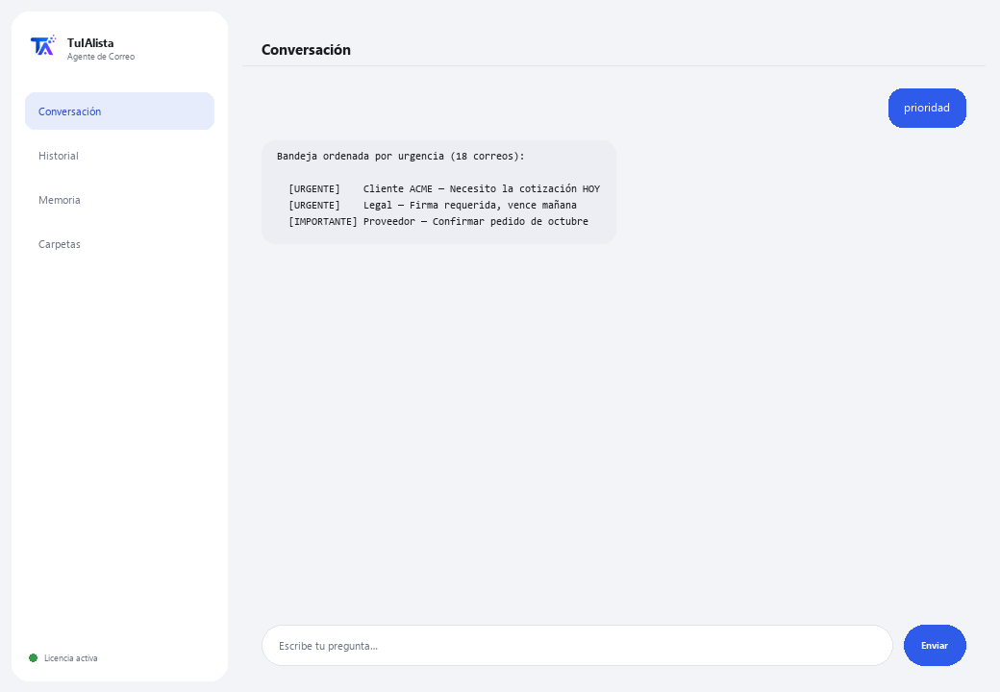

Agente de Correo
Ordena tu bandeja, te dice qué urge y te redacta respuestas — procesando todo en tu computadora.
¿Qué resuelve y qué necesitas?
El correo es uno de los mayores drenajes de tiempo del día: decenas de mensajes donde se mezcla lo urgente con el ruido. Este agente convierte esa bandeja caótica en una lista de acciones clara — priorizada, con tareas extraídas y borradores listos.
- Necesitas: tu clave de licencia (TIA-XXXX-XXXX-XXXX-XXXX) y la carpeta con tus correos exportados (.eml, .mbox, .txt o .csv). Nada de Python ni conocimientos técnicos.
- Primer resultado en menos de 5 minutos: instalas, activas, eliges tu carpeta y corres prioridad para ver tu bandeja ordenada por urgencia.
- Tus correos nunca salen de tu computadora — el análisis corre localmente.
soporte@tuialista.com o entra a tuialista.com/soporte — normalmente respondemos el mismo día hábil.1 Qué hace este agente
Tú le señalas la carpeta con tus correos exportados y él:
- Los lee todos (.eml, .mbox, .txt y .csv), sin conexión a servidores de correo.
- Prioriza cada mensaje: urgente, importante, normal o bajo.
- Extrae las tareas que te piden, con quién las pide y para cuándo.
- Detecta pendientes sin respuesta probable.
- Redacta borradores de respuesta profesionales en el idioma del correo.
- Agrupa por remitente y busca dentro de tus correos.
- Responde tus preguntas sobre la bandeja: “¿qué me pidieron con fecha límite esta semana?”
El resultado: dejas de perder tiempo en la bandeja y actúas primero en lo que de verdad importa.
2 Instalación (2 minutos)
Para Windows. No hace falta internet permanente ni subir nada a la nube.
Baja el instalador desde tuialista.com/descargar (agente Correo) y ábrelo. Crea un acceso directo en tu escritorio con el logo — no requiere Python ni terminal.
Doble clic al ícono nuevo. Pega tu clave de licencia (te llegó por correo al comprar) y pulsa Activar. Verás una palomita verde cuando sea válida.
Selecciona la carpeta con tus correos exportados y pulsa Comenzar a usar el agente. La próxima vez arranca directo — recuerda tu clave y tu carpeta.
3 Cómo usarlo
El agente abre una ventana de chat, como una app de mensajería — no es una pantalla negra de programador. Escribes tu comando o tu pregunta en el cuadro de texto de abajo, pulsas Enviar (o Enter), y la respuesta aparece como un mensaje, igual que en esta imagen real:

Los comandos siguientes son las palabras que puedes escribir en ese mismo cuadro de texto:
> prioridadTu bandeja ordenada por urgencia: URGENTE, IMPORTANTE, NORMAL, BAJO. Marca los que tienen fecha límite.
> resumenPanorama ejecutivo de la bandeja: cuántos urgentes/importantes, remitentes más frecuentes y qué atender primero.
> tareasCorreos que piden una acción, con quién la pide, la prioridad y la fecha límite mencionada si la hay.
> responder <asunto>Borrador de respuesta al correo que indiques (por asunto o número), en el idioma del original, con espacios [ENTRE CORCHETES] para completar.
> pendientesCorreos que piden acción y cuyo remitente no aparece como destinatario de otro correo tuyo — posiblemente sin contestar.
> remitentesAgrupa tus correos por remitente, ordenado por volumen.
> buscar <texto>Busca una palabra o frase en asunto y cuerpo. Ej.: buscar factura marzo.
> ¿pregunta libre?Escribe cualquier duda en lenguaje natural, ej.: ¿qué correos urgentes tengo de esta semana?
> salirTermina la sesión (también funciona exit).
4 Ejemplos de uso común
Empezar el día por lo urgente
prioridad — ves primero lo URGENTE y lo que tiene fecha límite.
No olvidar lo que te pidieron
tareas
Contestar rápido y bien
responder propuesta de proyecto — obtienes un borrador profesional listo para revisar y enviar.
Detectar lo que quedó sin responder
pendientes
5 Preguntas frecuentes
¿Mis correos se suben a internet?
¿Se conecta a mi cuenta de Gmail/Outlook?
¿Necesito internet para usarlo?
¿Cómo decide la prioridad?
¿En qué idioma redacta las respuestas?
¿Cómo detecta “pendientes sin respuesta”?
¿Puedo cambiar la carpeta de correos?
¿Lee archivos adjuntos (PDF, Word)?
¿Modifica o envía correos?
¿Guarda historial entre sesiones?
6 Solución de problemas
Muestra “0 correos”
Un .csv no se lee bien
Dice “Licencia no válida” o pide reconectar
“No hay proveedores de IA configurados”
¿Ninguna de estas soluciones resolvió tu problema? Escríbenos directamente — con gusto lo revisamos contigo.
soporte@tuialista.com o entra a tuialista.com/soporte — normalmente respondemos el mismo día hábil.7 Privacidad y confidencialidad
Tus correos nunca salen de tu computadora.
- El agente lee y procesa los archivos localmente, en tu propio equipo. No se conecta a tu servidor de correo ni sube tus emails a ningún lado.
- La priorización, la detección de tareas y la agrupación por remitente ocurren en tu máquina.
- Lo único que viaja por internet es: (1) una comprobación de que tu licencia está activa — que no incluye el contenido de tus correos —, y (2) al pedir un resumen, un borrador o una pregunta, se envía un fragmento de los correos relevantes al motor de IA para redactar la respuesta.